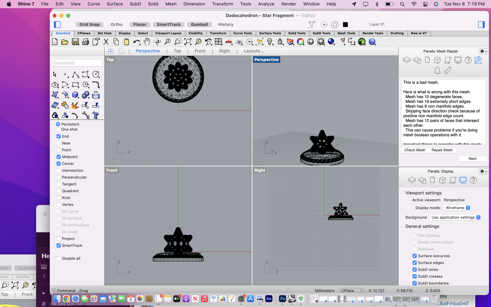

A5: Mesh
Click on the images below to download the rhino file:

For this assignment, I started with a star fragment and parts of desert base from thingiverse. (https://www.thingiverse.com/thing:5199857,https://www.printables.com/en/model/231726-star-fragment-like-in-animal-crossing-new-horizons )
I checked for if they were both okay; the star fragment worked fine, but the desert base had a bad mesh.

I reduced the mesh size of the desert base to 500 polygons, knowing that I'll have to join these meshes I felt I should do the same for the star fragment.
After joining the polygons together with the meshboolean union, I checked the mesh again. The mesh came out fine.

A5: Lamp
Click on the images below to download the rhino file:
For this assignment I wanted to make a lamp based on a video game item called a star fragment from the video game animal crossing. I got an STL from the this website: https://www.printables.com/model/231726-star-fragment-like-in-animal-crossing-new-horizons.
I went to home depot and bought a LED lightbulb that can change colors via bluetooth connection with your phone. I made sure the base was the correct one being a medium/standard base, and measured the size bulb. I also wanted to have a standing lamp, so I bought a basic lamp base off of amazon.

I then imported the star fragment model into rhino. I scaled the star fragment model to have the light bulb to be able to fit it into. Then I reduced the poly count of the mesh. Which is now roughly 500 polygons. I then boolean unioned a cylinder that would guide the lightbulb into the star Fragment.
I then imported a pedestal STL. The mesh was bad so I had to reduce it’s size. Going from 200,00 to 500 polygons. Then I turned the mesh into a polysurface, then boonlean unioned the pedastal and star into one geomtry. https://www.thingiverse.com/thing:470199
I then used the “Split” command to hollow out the star fragment and pedestal, by putting a cylinder through the geometry.